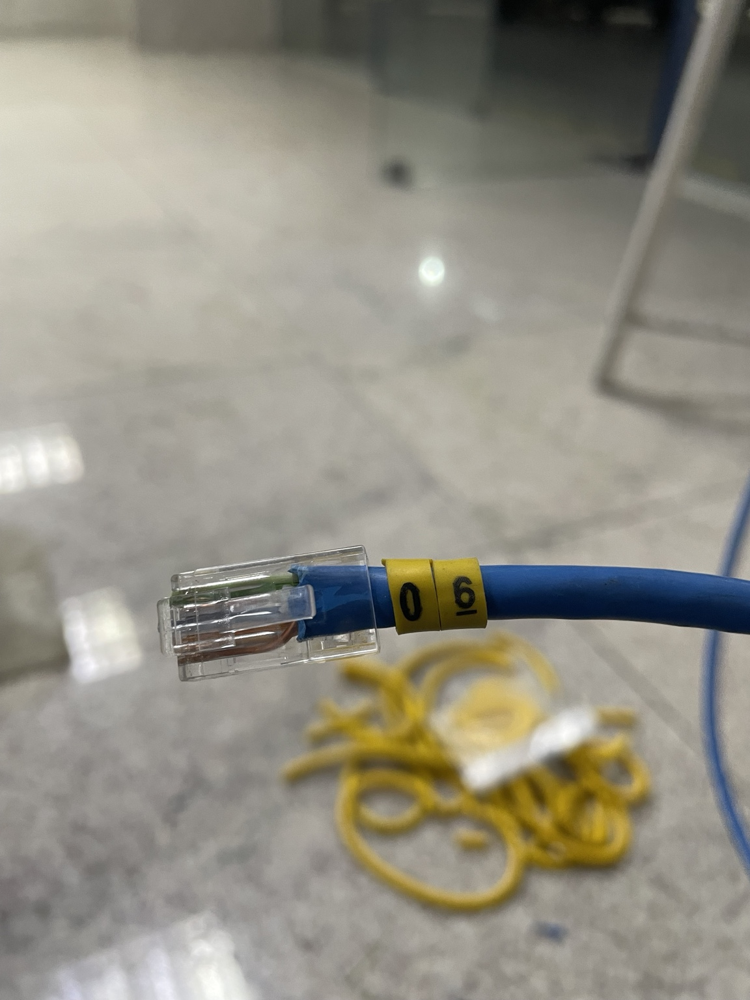
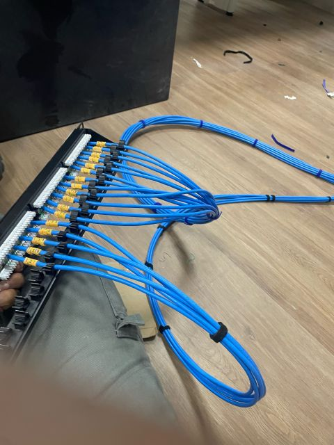
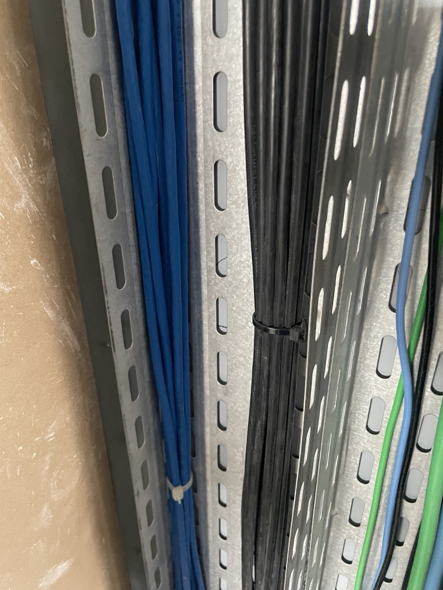
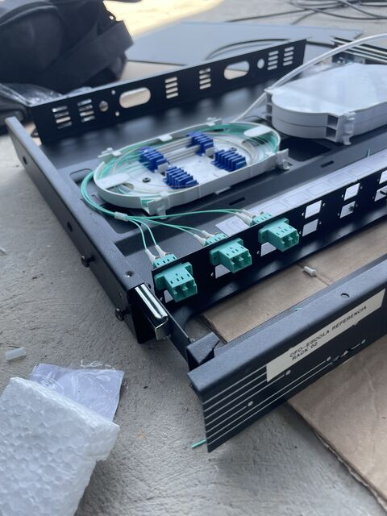
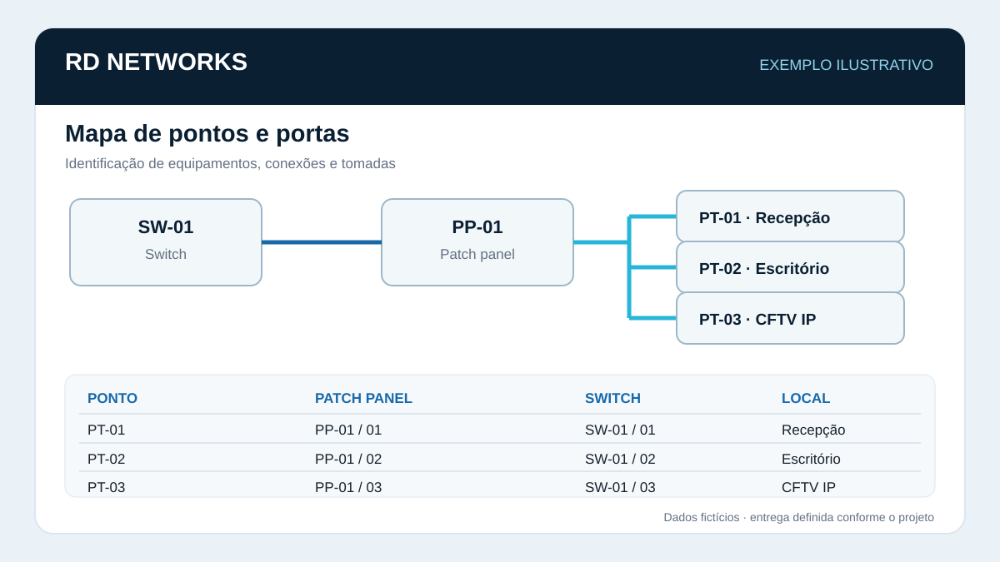
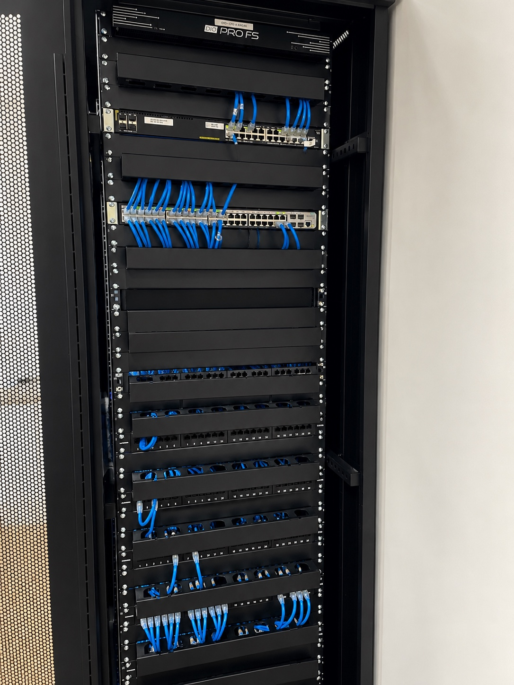
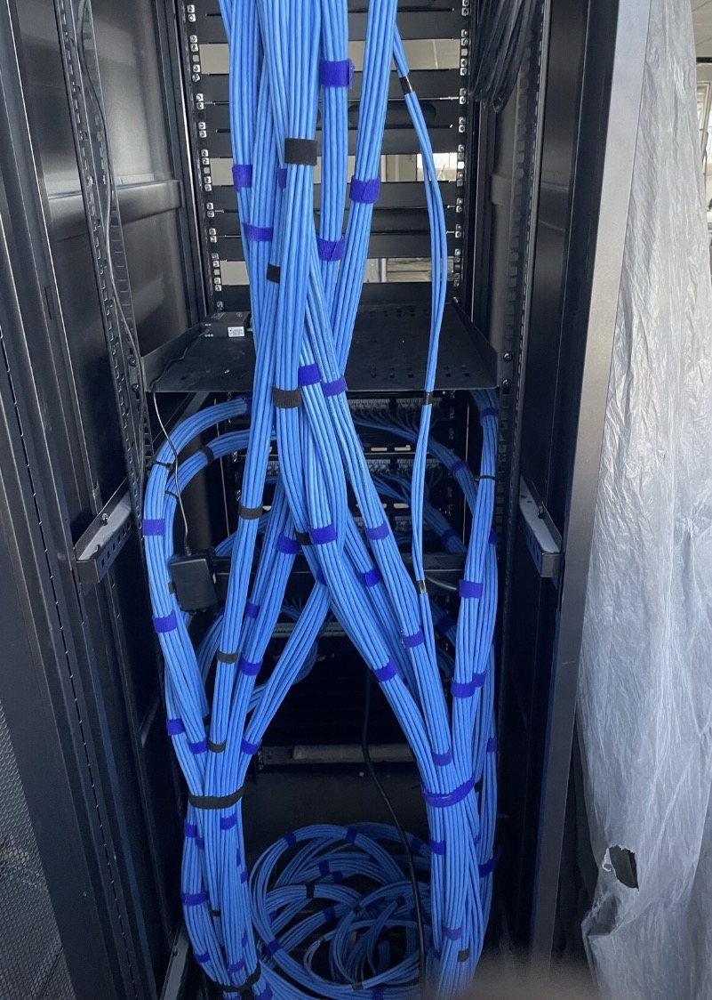

Instalação de pontos RJ45
Passagem de cabos, instalação e terminação de pontos de rede e identificação das conexões.
INFRAESTRUTURA DE REDES PARA EMPRESAS
A RD Networks realiza cabeamento estruturado, instalação de pontos RJ45, organização de racks e documentação de redes. Atendimento na Grande Vitória, com orçamento claro antes da execução.
COMO PODEMOS AJUDAR
Atendimento para empresas que precisam ampliar, organizar ou melhorar a infraestrutura física de rede.

Passagem de cabos, instalação e terminação de pontos de rede e identificação das conexões.

Organização de equipamentos, patch panels, guias, painéis cegos e cabeamento.

Lançamento e organização de cabos em eletrocalhas e caminhos disponíveis no local.

Lançamento e organização de cabos de fibra óptica, conforme o percurso da infraestrutura.

Registro de pontos, cabos, patch panels e conexões identificadas.
TRABALHOS E EXPERIÊNCIA PRÁTICA
Veja imagens de atividades de cabeamento, conectividade e organização de racks.


NA PRÁTICA
Veja um exemplo de trabalho com infraestrutura de redes realizado na prática.
ONDE ATENDEMOS
Atendimento presencial em Vitória, Vila Velha, Serra e Cariacica. Outras localidades podem ser avaliadas conforme o serviço e a disponibilidade.
Agendamento principalmente após o expediente durante a semana e aos sábados.
FALE COM A RD NETWORKS
Informe seu nome, cidade e o serviço que precisa. Sua mensagem será preparada para envio pelo WhatsApp.
Abrir WhatsApp diretamenteQUEM ESTÁ À FRENTE DA RD NETWORKS

FUNDADOR E DIRETOR
À frente da RD Networks, atuo com infraestrutura física de redes, cabeamento estruturado, pontos RJ45 e organização de racks.
Experiência prática desde 2023 em atividades de infraestrutura e instalação de redes.
Conheça meu perfil no LinkedIn →